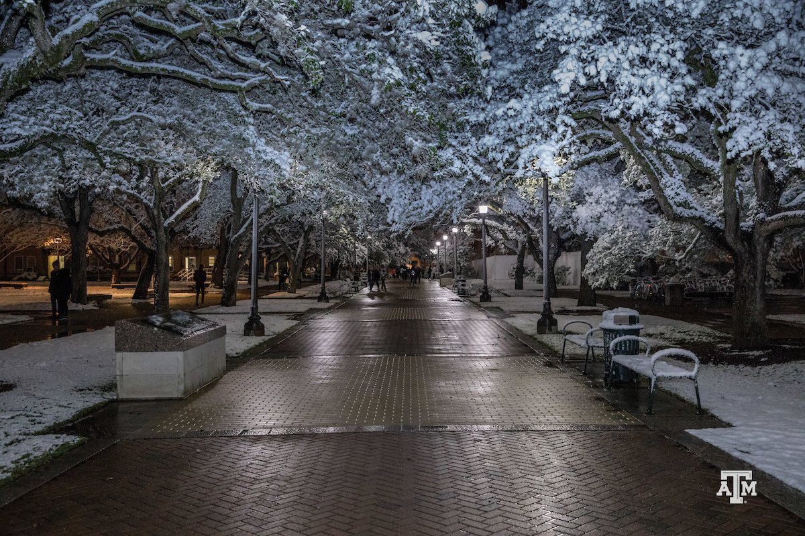

Hi, I am Harshank Patel. I am a Senior at Texas A&M University located in College
Station,
TX. I was born and raised in a town called Vadodara located in the eastern part of
India. After
graduation, my family decided to immigrate to the United States of America where I began my
higher education at Texas A&M
University.

My love for Computer Science began when I was in a CSCE-121 course lead by Dr. Philip Ritchey.
Dr. Ritchey was an amazing professor who not only taught me how to write "Hello World" in
C++
but
his teaching methodology inspired me to become a Peer
Teacher in the Computer Science
department. I have been a Peer Teacher for the past semester and have been mentoring
students in
CSCE 121, 221, and
314 courses.

My major at Texas A&M University was Computer
Engineering. but after the first semester
here, I
discovered what amazing the field of is and I applied to transfer into
Computer
Science. Over the past summer, I have interned as a Software Developer at Discover in
Chicago
where I worked on the Payment Management Platform called Discover DDX. My project while at
Discover was to design, implement and deploy a full-stack testing suite in Java, Cucumber,
and
Selenium. For the Summer of 2021, I will be working as a Software Developer at USAA where I
will
be implementing a cloud-based Salesforce application in their mobile DevOps team.
Apart from teaching, my hobbies include Kayaking, Cooking, and Biking. I have participated
in numerous Kayaking events hosted in Lady Bird
Lake in Austin. My hobbies also include rock
climbing and traveling to various countries during Summer break. I have been to Singapore,
Malaysia, Thailand, Italy, France, Germany, Austria, Switzerland, and Czechia. My love for
traveling began in 2007 when my family took me to Nepal for a rock climbing summit on the
Himalayas.